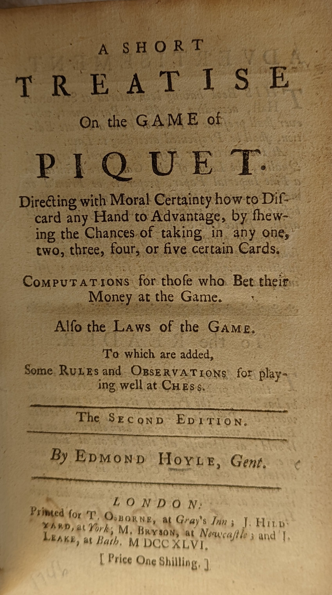

A Descriptive Bibliography of Edmond Hoyle
Copyright © 2014-26 by David Levy
(page updated 2026-01-30)User Guide
Piquet.2
A Short Treatise on the Game of Piquet, printed for T. Osborne et al, second London edition, 1746.
 |
Title: | A SHORT | TREATISE | On the GAME of | PIQUET. | Directing with Moral Certainty how to Diſ-|card any Hand to Advantage, by ſhew-|ing the Chances of taking in any one, | two, three, four, or five certain Cards. | Computations for thoſe who Bet their | Money at the Game. | Alſo the Laws of the Game. | To which are added, | Some Rules and Observations for play-|ing well at Chess. | [rule] | The Second Edition. | [rule] | By Edmond Hoyle, Gent. | [rule] | LONDON: | Printed for T. Osborne, at Gray's Inn; J. Hild-|yard, at York; M. Bryson, at Newcaſtle; and J. | Leake, at Bath. M DCC XLVI. | {Price One Shilling.} |
| Collation: | 12o: [A]2 B–F6 G4 [$1–3 (−D3) signed]; 36 leaves, pp. [4 ] [1] 2–68 |
| Contents: | Signature (Page) Reference | Contents | Signature (Page) Reference | Running Titles |
| A1r | title | |||
| A1v | ‘ADVERTISEMENT. | [...] | To the READER. | [...]’ | |||
| A2r | ‘[headpiece Spedding H17] | Conents for Piquet. | [...]’ | |||
| A2v | ‘[headpiece Spedding H12] | Conents for Chess. | [...]’ | |||
| B1r–E6r (1–47) | ‘[headpiece Spedding H06] | A | TREATISE | on the GAME of | PIQUET. | [...]’ | B1v–E6r (2–47) | ‘A Treatiſe on Piquet.’ | |
| on C5v (22), E5v (46) | ‘Treatiſe on Piquet.’ | |||
| E6v–G4v (48–68) | ‘[headpiece Spedding H09] | SOME | Rules and Observations | FOR | Playing well at CHESS. [...]’ | F1r–G4v (49–68) | ‘Rules and Obſervations | for playing at CHESS.’ |
| Publisher: | Thomas Osborne |
| Printer: | Thomas Gardner (ornaments) |
| Price: | 1s. (title) |
| References: | ESTC T87517, Horr 650, Jessel 780, Marshall s7 no.8 p263 (1889-10-05), Rather 26 |
| Copies Seen: | NvLN [GV1295.H68 1745]; NvLN [GV1469.B2 H6 1745]; Levy [1014] |
| Copies Seen in Collections: | L [7917.de.56(2)] (ECCO) (see Osborne.E); O [3843 f.10(2)] (see Osborne.E); O [Jessel f.545(3)] (see Osborne.C); O [Jessel f.546(3)] (see Osborne.B); O [Jessel f.548(2)] (see Osborne.E); Copisarow (see Osborne.B); CLU-C [*GV1277.H86 1746] (see Osborne.C); CSFU [GV1277.H89 1746] (lacking leaves after D5) (see Osborne.B); DLC [GV1277.H89 1746] (see Osborne.B); DLC [GV1277.H89 1747] (see Osborne.D); NvLN [GV1241.H69 1746] (see Osborne.B); NvLN [GV1277.H69 1747b] (see Osborne.D); OCl [789.87H F46L] (see Osborne.B); TNJ [GV1241.H6 1746] (see Osborne.C); TNJ [GV1241.H8 A6] (see Osborne.C); TNJ [GV1241.H8 A7] (see Osborne.E); TxU [GV1277.H89 1746] (see Osborne.C); Levy [1617] (see Osborne.B); Levy [1685] (see Osborne.C); Levy [1764] (see Osborne.C); Levy [1769] (see Osborne.E); Levy [2112] (see Osborne.D) |
| Other Copies: | C [Syn.7.74.33(9)]; IU [795.41 H85S1746] |
| Other Copies in Collections: | Sings (see Osborne.B); HAG [KW 973 L 6 [3]] (see Osborne.C); Beauchene (see Osborne.B); Beauchene (see Osborne.D); CtY-BR [NLp80 742he] (see Osborne.C); AuNU [RB 4646.44 at 4646.43] (see Osborne.C); AuVSL [793 H85 (1746)] (see Osborne.B) |